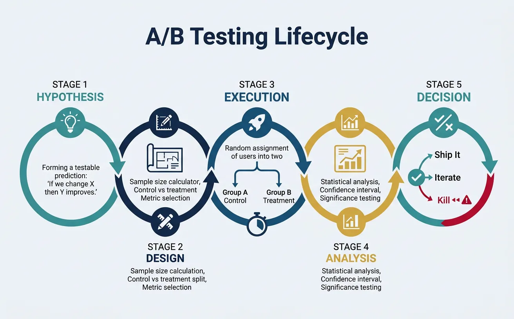
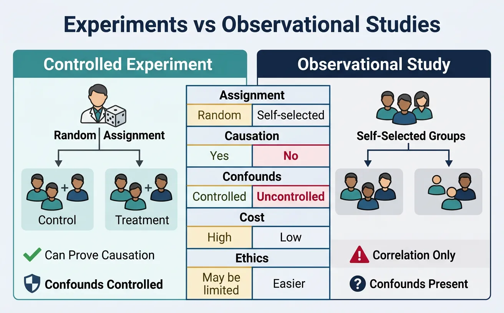
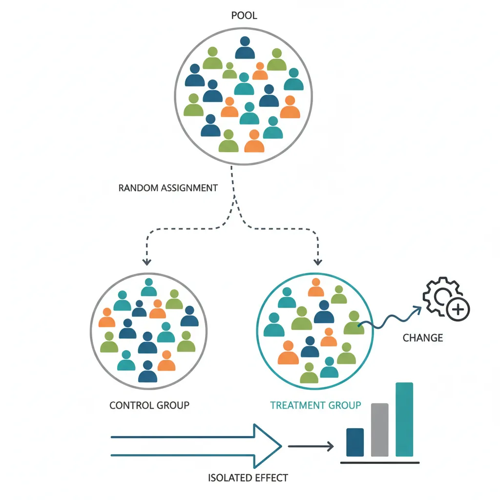
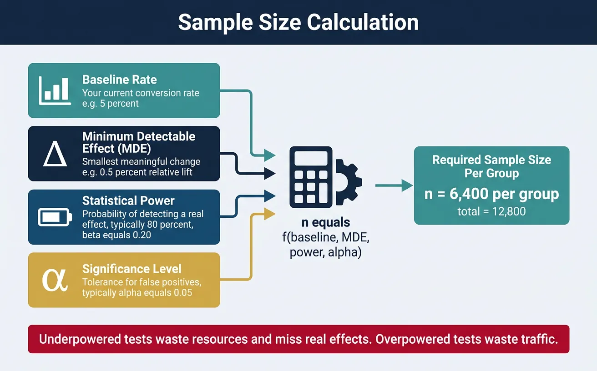
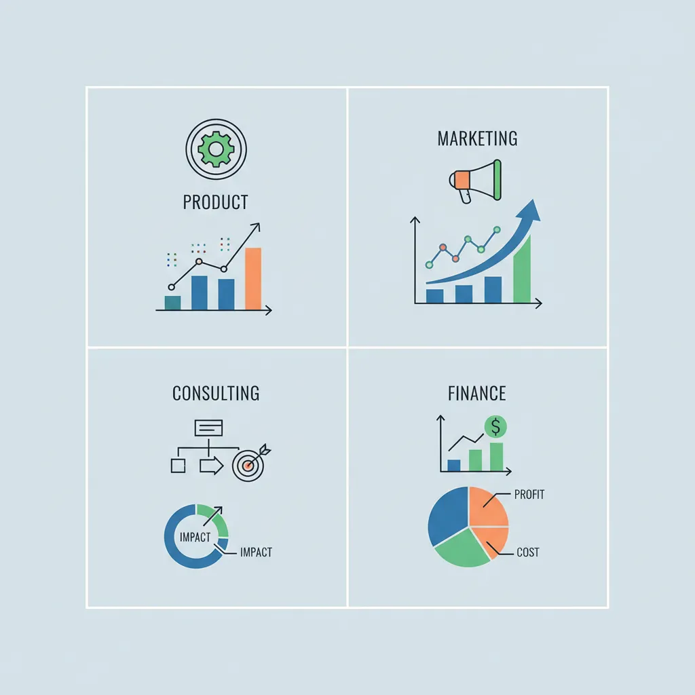

1. Introduction
Experimentation is the gold standard for establishing causation. While observational data can show correlation ("users who click X also buy more"), only controlled experiments can prove that X causes increased purchases. This guide covers how to design, run, and analyze rigorous business experiments.

Why Experimentation Matters
Tech giants like Google, Amazon, and Netflix run thousands of A/B tests annually. Google famously tested 41 shades of blue for link colors. Amazon's experimentation culture drives millions in incremental revenue. If you're not experimenting, you're guessing.
Data-Driven Decisions
Introduction to Business Analytics & DDDM
Analytics maturity, data-driven culture, business valueDefining & Tracking KPIs
OKRs, leading/lagging indicators, scorecard designDashboard Design & BI Tools
Tableau, Power BI, dashboard best practices, data vizExperimentation & A/B Testing
Hypothesis testing, control groups, sample sizingStatistical Significance & Interpretation
P-values, confidence intervals, effect size, power analysisDecision Frameworks & Structured Decision Making
Decision matrices, Bayesian thinking, risk analysisData Collection & Quality Management
Surveys, ETL, data governance, cleaning pipelinesBusiness Storytelling & Visualization
Narrative structure, chart selection, audience designPredictive Analytics & Forecasting
Regression, time series, ML models, forecasting methodsData-Driven Culture & Organizational Adoption
Change management, data literacy, organizational buy-inFunction-Specific Data Applications
Marketing, finance, operations, HR analyticsCapstone Projects (Portfolio-Ready)
End-to-end analytics projects, portfolio buildingAdvanced Analytics & Automation
ML pipelines, AutoML, real-time analytics, AI integration2. Experiments vs Observational Analysis
Understanding the difference is critical for making valid causal claims:

flowchart TD
H["Formulate
Hypothesis"]
SS["Calculate
Sample Size"]
RAND["Randomize
Control vs Treatment"]
RUN["Run Experiment
(minimum duration)"]
ANALYZE["Statistical
Analysis
(p-value, CI)"]
DEC{"Significant
result?"}
H --> SS --> RAND --> RUN --> ANALYZE --> DEC
DEC -->|"p < 0.05"| SHIP["Ship Change
to Production"]
DEC -->|"p ≥ 0.05"| ITERATE["Iterate:
New hypothesis
or larger sample"]
DEC -->|"Negative impact"| KILL["Kill Feature"]
ITERATE --> H
style H fill:#132440,stroke:#132440,color:#fff
style SHIP fill:#e8f4f4,stroke:#3B9797
style KILL fill:#BF092F,stroke:#132440,color:#fff
| Aspect | Observational Study | Controlled Experiment |
|---|---|---|
| Assignment | Self-selected or by circumstance | Random assignment by researcher |
| Causation | Can only show correlation | Can establish causation |
| Confounds | Many potential confounders | Controlled through randomization |
| Example | "Users who use feature X have higher retention" | "Enabling feature X increases retention by 5%" |
Plan your A/B test with hypothesis, metrics, control/variant descriptions, and success criteria. Download as Word, Excel, or PDF.
All data stays in your browser. Nothing is sent to or stored on any server.
3. Randomization & Control Groups
Randomization is what makes experiments powerful—it ensures groups are comparable except for the treatment.

Control vs Treatment Groups
- Control group: Receives the existing experience (no change)
- Treatment group(s): Receives the new variant(s) being tested
A/B Test Structure
TRAFFIC: 100,000 users over 2 weeks
│
├── 50% → CONTROL (A): Current checkout flow
│ Conversion: 3.2%
│
└── 50% → TREATMENT (B): New streamlined checkout
Conversion: 3.5%
ANALYSIS: Is 0.3pp lift statistically significant?
Random Assignment
Users should be randomly assigned to groups. Common methods:
- User ID hashing: Hash(user_id) mod 100 determines bucket
- Cookie-based: Assign on first visit via cookie
- Session-based: New assignment each session (rarely preferred)
Randomization Pitfalls
- Network effects: Users in treatment may influence control (social platforms)
- Device contamination: Same user on multiple devices assigned differently
- Time-based assignment: Assigning by time period creates confounds
4. Sample Size Calculation
Running an underpowered test wastes resources—you won't detect real effects. Running an overpowered test wastes traffic that could be used elsewhere.

Minimum Detectable Effect (MDE)
MDE is the smallest effect size your experiment can reliably detect. It depends on:
- Baseline rate: Your current conversion rate
- Sample size: More users = smaller MDE
- Statistical power: Usually 80% (β = 0.20)
- Significance level: Usually α = 0.05
Power Analysis
| Baseline Rate | MDE (Relative) | Sample per Variant |
|---|---|---|
| 1% | 10% | ~400,000 |
| 5% | 10% | ~35,000 |
| 10% | 10% | ~15,000 |
| 5% | 20% | ~9,000 |
5. Key Metrics by Function
Different teams run experiments on different metrics:

Product Metrics
- Conversion rate: % completing desired action
- Engagement: DAU/MAU, session duration, pages per session
- Retention: D1, D7, D30 retention rates
- Feature adoption: % users using new feature
Marketing Metrics
- Click-through rate (CTR): % clicking on ad/email
- Cost per acquisition (CPA): Marketing spend ÷ conversions
- Return on ad spend (ROAS): Revenue ÷ ad spend
Consulting Metrics
- Pilot success rate: % of pilots meeting success criteria
- Client satisfaction: NPS or CSAT scores
- Implementation adoption: % of recommendations adopted
Finance Metrics
- Revenue per user: ARPU or ARPPU
- Churn rate: % customers lost per period
- Lifetime value (LTV): Total expected revenue from customer
6. Advanced Experimentation
Multivariate Tests
Test multiple variables simultaneously to find optimal combinations:
- Full factorial: Test all combinations (e.g., 2 headlines × 3 images = 6 variants)
- Fractional factorial: Test a subset to reduce traffic needs
- Use case: Landing page optimization with multiple elements
Bandit Algorithms
Adaptive algorithms that shift traffic toward winning variants during the test:
- Epsilon-greedy: Explore ε% of time, exploit (1-ε)%
- Thompson Sampling: Bayesian approach to balance explore/exploit
- Trade-off: Reduces regret but sacrifices statistical rigor
Quasi-Experiments
When true randomization isn't possible:
- Difference-in-differences (DiD): Compare treated vs. control before/after
- Regression discontinuity: Use a threshold for natural experiment
- Matched samples: Pair similar units across groups
7. Common Pitfalls
Early Peeking
Checking results before reaching full sample size inflates false positive rates. If you peek 10 times during a test, your effective alpha can exceed 30%!
Solution: Pre-commit to sample size and analysis date. Use sequential testing methods if early decisions are necessary.
Biased Samples
Sample bias invalidates results:
- Survivorship bias: Only including users who didn't churn
- Self-selection: Users opt into treatment
- Day-of-week effects: Running only on weekends
Multiple Comparisons
Testing many metrics or variants increases false positive risk. If you test 20 metrics at α = 0.05, expect 1 false positive by chance alone.
Solutions:
- Bonferroni correction: Divide α by number of tests
- Pre-register primary metric: Commit to one key metric before the test
- Treat secondary metrics as exploratory: Use for hypothesis generation, not conclusions
8. Conclusion & Next Steps
Key Takeaways
- Experiments establish causation—observational data only shows correlation
- Randomization is essential—it eliminates confounders
- Calculate sample size upfront—avoid underpowered tests
- Watch for pitfalls—early peeking, bias, multiple comparisons
- Consider advanced methods—bandits, MVT, quasi-experiments when appropriate
In the next article, we'll cover Statistical Significance & Interpretation—the statistical foundations for analyzing your experiment results correctly.